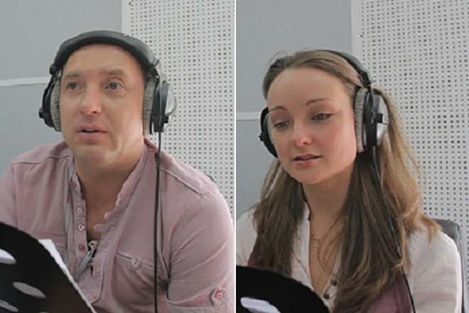

Михаил Жонин Геннадьевич
В открытых источниках сложно найти информацию, касающуюся любовных отношений актёра.
Михаил не любит, когда его личная жизнь у всех на виду, а потому старается не
распространяться на эту тему.
Невзирая на то, что Жонин весьма общительный и коммуникабельный, у него было не так много
постоянных партнёрш. О прежних романах мужчины практически ничего не известно.

Свою вторую половинку Михаил встретил благодаря работе. Вместе с Юлией Перенчук они озвучивали
турецкий сериал «Роксолана. Великолепный век». Голосом Жонина с телеэкрана разговаривал
правитель Османской империи – великий и властный Сулейман. А Юлия дублировала главную героиню
картины – Роксолану.
Будущая жена знала Михаила до того, как они встретились на озвучке. Перенчук впервые увидела
Жонина на театральной сцене. Талантливый и мужественный актёр покорил сердце молодой красавицы.
Она мечтала познакомиться с ним поближе. Узнав, что ей предстоит озвучивать вместе с Жониным
сериал, Юлия была в восторге. А когда мужчина позвал её на первое свидание, чуть не потеряла
голову от счастья.
Милая и симпатичная девушка сразу приглянулась Жонину. Актёры закрутили служебный роман, который
быстро набирал обороты. Вскоре мужчина решился сделать возлюбленной предложение и в его
биографии началась новая глава. Михаил признаётся, что Юлия для него – это не только заботливая
и любящая жена, она также его верный друг. Семья Михаила Жонина очень крепкая и дружная.
Супругов объединяет общая профессия, они с пониманием относятся друг к другу и умеют находить
компромиссы.
Жена Михаила Жонина дублировала многих именитых зарубежных актрис, среди которых Джессика Альба,
Натали Портман, Кристина Агилера, Скарлетт Йоханссон и другие.
Точная информация, есть ли дети у Михаила Жонина, пока отсутствует. Возможно, супруги ещё не
обзавелись потомством. А может, они просто скрывают наличие ребёнка, чтобы не подвергать его
повышенному вниманию журналистов. Тем не менее, хочется верить, что в их семье царит гармония и
абсолютное счастье.